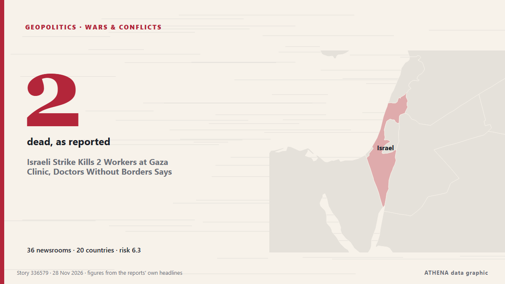

Κίνδυνος 7.4Αυξημένος
Γεωπολιτική, οικονομία και θαλάσσια ναυτιλία — διασταυρωμένα σε πολλές χώρες.
Γεωπολιτική
Όλη η Γεωπολιτική >Υψηλότερος κίνδυνος τώρα

Αυξανόμενος κίνδυνοςΑύξηση τις τελευταίες 24 ώρες
Ναυτιλία & ναυσιπλοϊα
Γραφείο Ναυτιλίας >Υψηλότερος κίνδυνος τώρα
Κίνδυνος 7.4Αυξημένος
Saudi-led coalition says it destroyed 3 Houthi ballistic missiles targeting southern Saudi Arabia
Δείτε τα στοιχεία ›
Πίνακας παρακολούθησηςΠεράσματα, λιμάνια και άλλες ναυτιλιακές αναφορές
- Strait of HormuzΔιαταραχήattack / strike · risk 6.6 · 140 newsrooms (72 h)
- Bab el-Mandeb / Red SeaΔιαταραχήattack / strike · risk 7.4 · 138 newsrooms (72 h)
- Kerch Strait / Black SeaΔιαταραχήattack / strike · risk 7.4 · 138 newsrooms (72 h)
Κάθε είδηση, ελεγμένη σε πολλές χώρες.
Το ATHENA Glaux παρακολουθεί 742 ειδησεογραφικά μέσα σε όλο τον κόσμο. Μια είδηση γίνεται επαληθευμένο γεγονός μόνο όταν την αναφέρουν ανεξάρτητα μέσα. Κάθε γεγονός δείχνει ποιος το ανέφερε πρώτος και έναν βαθμό κινδύνου με τους λόγους του.
1.142γεγονότα σε 24 ώρες
742μέσα που παρακολουθούμε
43λεπτά ανάμεσα στις ενημερώσεις
Σεισμός ή πλημμύρα κοντά σας αυτή την εβδομάδα;
Γράψτε την πόλη σας και δείτε σεισμούς, πλημμύρες, καταιγίδες και επίσημες προειδοποιήσεις κοντά της, με λίστα κιτ έκτακτης ανάγκης 72 ωρών. Δωρεάν, χωρίς εγγραφή, και η περιοχή σας μένει στη συσκευή σας.
Αναφορές έρχονται από ανεξάρτητα μέσα — όταν δύο συναντηθούν στην ίδια ιστορία, γίνεται επιβεβαιωμένο γεγονός.
Πώς ελέγχει το ATHENA μια είδηση
- ΣυλλογήΟι αναφορές φτάνουν από ανεξάρτητα μέσα σε πολλές χώρες.
- ΑντιστοίχισηΌταν δύο μέσα συναντιούνται στην ίδια είδηση, γίνεται επαληθευμένο γεγονός.
- ΕξήγησηΚάθε γεγονός δείχνει ποιος ήταν πρώτος, πόσο εξαπλώθηκε και γιατί ο κίνδυνος είναι αυτός.
Παγκόσμια προοπτική κινδύνου
Εβδομαδιαίες και μηνιαίες επισκοπήσεις: τα γεγονότα υψηλότερου κινδύνου, οι τάσεις ανά τομέα και περιοχή και τι να παρακολουθήσετε.
Διαβάστε την προοπτική ›Ημερήσια ενημέρωση
Τα δέκα σημαντικότερα γεγονότα της ημέρας στον κόσμο, οι αυξανόμενοι κίνδυνοι και τα νέα γεγονότα, με κάθε αριθμό εξηγημένο.
Ανοίξτε τη σημερινή ενημέρωση ›
ΓεωπολιτικήIsraeli Strike Kills 2 Workers at Gaza Clinic, Doctors Without Borders Says
The aid group condemned the attack on a medical facility, which Israel said was a targeted strike that killed security guards it called Hamas operatives. από The New York Times (World)
7.1Σημασία
6.0Κίνδυνος · υψηλός
91%Βεβαιότητα
Οι τίτλοι των ειδήσεων παρουσιάζονται στα αγγλικά, όπως δημοσιεύτηκαν.
Τεχνολογία & Κυβερνοασφάλεια
Taiwan awaits local election results as China watches
Taipei Mayor Chiang Wan-an is leading in the vote count in an election against his opponent Puma Shen, Taiwan media outlets reported on Saturday. από France 24 English
Ενέργεια & Περιβάλλον
100th Macy's Thanksgiving Day Parade steps off in Manhattan after postponement
The Buzz Lightyear balloon. The Macy’s centennial Thanksgiving Day Parade was ready to go on Saturday after a two-day delay. από Gothamist (New York City)
Χορηγούμενο
Cybernetics and Artificial Intelligence Lab Welcome to the Cybernetics and Artificial Intelligence Laboratory, established at the Department of Business Administration of the National and Kapodistrian University of Athens. The lab is headed by Professor Dimitrios Thomakos. The lab aims to do research that can be published in top venues. Our research uses tools and methods of Artificial Intelligence, and lies in the following areas: - Forecasting - Decision making - Cyber security - Finance We are always looking forward to collaborating with exceptional students!
Μάθετε περισσότερα – Cybernetics and Artificial Intelligence LabΠλοία στα θαλάσσια περάσματα τώρα
Ζωντανές μετρήσεις AIS. Πατήστε ή περάστε πάνω από μια μπάρα για λεπτομέρειες.
Τελευταίες αναφορές
Iran says it shot down 'enemy reconnaissance drone' over Strait of Hormuz
Netanyahu offers Eisenkot first turn in proposed unity government
Erdogan tells Greek president Türkiye has no hesitation to make Aegean 'sea of peace'
UK pensions department says it was targeted in cyberattack
'Millions starving' in Yemen's north, NGO head says
Magnitude 6.2 earthquake strikes Russia’s Kamchatka Peninsula
Albania’s Independence Day rocked by violent protests over corruption
BJP pushing India towards dictatorship, 850 figure will murder democracy, says Rahul Gandhi
Γεωπολιτική
Russian authorities say over 1,200 Ukrainian drones shot down in new nighttime attack
Ukraine also reported hundreds of Russian drones fired at several regions, with one person killed and five injured. από TheJournal.ie
Γεωπολιτική
CHINA DIARIES: Where Students Build the Future
I must confess, I was not quite prepared for what I saw during my visit to the Qinling Workshop at Xi’an Aeronautical Vocational and Technical College in China. από Daily Trust
Οικονομία & Αγορές
Trump shares Thanksgiving post claiming GDP figures released before midterm elections were 'fake'
The Commerce Department revised third-quarter GDP growth to 4.3% from 3.4% on Wednesday in what Trump calls a "massive, and purposeful, error." από The Jerusalem Post
Γεωπολιτική, Πολιτική & Ασφάλεια
Περισσότερα ›Διπλωματία & σύνοδοι
Netanyahu offers to rotate Israeli premiership with Eisenkot
Eisenkot is expected to form a coalition with anti-Netanyahu parties, but his Yashar party has also been conducting negotiations with Netanyahu's Likud. από The New Arab
- Διπλωματία & σύνοδοι
Iran’s supreme leader adviser warns Iraq not to become ‘tool of Trump’
- Εκλογές & πολιτική
Netanyahu offers to step down as Israel’s PM – but there’s a catch
- Πόλεμοι & συγκρούσεις
Russian forces attack two apartment buildings in Kharkiv with drones, one injured
- Πόλεμοι & συγκρούσεις
Drones Strike Russia’s Novoshakhtinsk Refinery and Samara Oil Hub
Οικονομία, Χρηματοοικονομικά & Αγορές
Περισσότερα ›Τράπεζες & πίστη
Iran rial falls to near 3 million to US dollar as sanctions, blockade weigh
Iran’s currency has plummeted to a record low, approaching 3 million rials to the US dollar, due to US sanctions and embargo pressures. από Arab News
- Τράπεζες & πίστη
US regulators shut United Fidelity Bank in biggest bank failure since 2024
- Προβλέψεις & κίνδυνος ύφεσης
Rain, thunderstorms and strong winds for 48 hours: The “Red Alert” areas and when heavy rainfall is expected in Attica
- Τράπεζες & πίστη
21 Settler Attacks on Palestinians in West Bank in 24 Hours
- Πληθωρισμός & επιτόκια
US Black Friday spending set to rise despite inflation fears
Εμπόριο, Βιομηχανία & Υποδομές
Περισσότερα ›Γεωργία & επισιτιστική ασφάλεια
Ukraine commemorates victims of Holodomor famines
On Saturday, November 28, Ukraine commemorates the victims of the Holodomor famines. από Ukrinform (English)
- Γεωργία & επισιτιστική ασφάλεια
Russia Strikes Two Greek-Managed Grain Ships Carrying Over 100,000 Tonnes Near Odesa
- Ναυτιλία & λιμάνια
Cargo vessel involved in incident with military forces in Gulf of Oman
- Κρίσιμες υποδομές
Russian strike hits critical infrastructure in Kyiv, threatening power and water disruptions
- Δασμοί & έλεγχοι εξαγωγών
UK policewomen told to dress modestly around Muslims, prompting Nigel Farage's two-tier policing attack
Ενέργεια, Πόροι & Περιβάλλον
Περισσότερα ›Ακραία καιρικά & φυσικές καταστροφές
Earthquake, multiple aftershocks rattle Los Angeles
There are no immediate reports of injuries or major damage, although some residents reported broken glass and objects knocked off shelves. από Free Malaysia Today
- Ακραία καιρικά & φυσικές καταστροφές
Australia’s conservatives win landslide victory in bellwether state
- Ρύπανση & βιοποικιλότητα
US Army detonation of 4,500 kg. lead-azide in Iowa had near-zero environmental impact, EPA claims
- Ακραία καιρικά & φυσικές καταστροφές
El Nino-linked deluges flood cities in Peru, Ecuador
- Κλίμα & κλιματική πολιτική
COP31 exposed the cracks in climate negotiation, not in cooperation
Τεχνολογία, ΤΝ & Κυβερνοασφάλεια
Περισσότερα ›Διάστημα & δορυφόροι
Musk Says Google Is Interested in Renting More Computing Capacity from SpaceX
SpaceX's Google cloud deal will bring in $920 million monthly from October 2026 to June 2029. από Express Tribune
- Λογισμικό & cloud
Google halts construction of Belgian data centre on authorities' order
- Κυβερνοασφάλεια
Latest on DWP State Pensions and benefits online services after ‘cyber incident’
- Κυβερνοασφάλεια
US says systems secure after reports of Air Force hack
- Ρομποτική & αυτοματισμός
The Best Black Friday Sonos Deals (2026): Up to 34% Off
Επιχειρήσεις, Εταιρείες & Επενδύσεις
Περισσότερα ›Εταιρική στρατηγική
New growth drivers fuel China's industrial profit gains
China industrial profits, October Year-to-date: 16.0% y/y prior (jany - September) 15.5% October alone: 20.1% y/y prior 14.4% Profit growth at China's industrial firms accelerated sharply in October… από investingLive (ForexLive)
- Εταιρική στρατηγική
WhatsApp announces new e-SIM feature for international travel
- Κλάδοι & εταιρικοί κίνδυνοι
The 29 Very Best Amazon Black Friday Deals (2026): Up to 60% Off
- Κλάδοι & εταιρικοί κίνδυνοι
Maternal, newborn death prevention research receives 1pc of global share
- Κλάδοι & εταιρικοί κίνδυνοι
29 Best Black Friday Deals Under $100 (2026)
Δυστυχήματα & έκτακτες ανάγκες
Περισσότερα ›Δυστυχήματα & έκτακτες ανάγκες
8 Killed, Pilot Survives In Peru Military Helicopter Crash
The helicopter crashed while on a mission to rescue a patrol in a remote area of the valley formed by the Apurimac, Ene and Mantaro rivers, known by its Spanish acronym VRAEM. από NDTV World
- Δυστυχήματα & έκτακτες ανάγκες
Some bootleg alcohol in Iran is poisoned on purpose, top psychiatrist warns
- Δυστυχήματα & έκτακτες ανάγκες
'Hero' gran dies saving two-year-old grandson's life in 'extraordinary act of bravery'
- Δυστυχήματα & έκτακτες ανάγκες
Karachi building collapse: Death toll rises to 11 as two more bodies recovered
- Δυστυχήματα & έκτακτες ανάγκες
Rescue operation completed in Nizhyn after Russian attack: death toll rises to seven – video
Τρεις τρόποι να διαβάσετε σήμερα
Ξεκινήστε από αυτόν που ταιριάζει στον χρόνο σαςΕπαληθευμένα γεγονότα
Κατά σειρά έκτασης της κάλυψης
- Nvidia’s chip financing can’t sustain the AI boom alone, LBS professor says151 μέσα · 51 χώρεςΚίνδυνος 3.5
- Κίνδυνος 6.6
- Zelensky objects to Trump calling Putin "friend"75 μέσα · 35 χώρεςΚίνδυνος 4.4
- At least 9 civilians killed in Ukraine as Russia claims near-record drone interceptions59 μέσα · 32 χώρεςΚίνδυνος 6.9
- Κίνδυνος 4.5
Γραφείο Αξιολόγησης
Κάντε μια ερώτηση και διαβάστε τεκμηριωμένη αξιολόγηση μιας βασικής είδησης, μαζί με το τι θα την διέψευδε.
Ανοίξτε το Γραφείο Αξιολόγησης ›Η σημερινή εικόνα
| 23:00 | 476 |
|---|---|
| 00:00 | 312 |
| 01:00 | 455 |
| 02:00 | 253 |
| 03:00 | 347 |
| 04:00 | 243 |
| 05:00 | 202 |
| 06:00 | 264 |
| 07:00 | 264 |
| 08:00 | 401 |
| 09:00 | 209 |
| 10:00 | 335 |
| 11:00 | 370 |
| 12:00 | 424 |
| 13:00 | 778 |
| 14:00 | 630 |
| 15:00 | 444 |
| 16:00 | 609 |
| 17:00 | 466 |
| 18:00 | 446 |
| 19:00 | 490 |
| 20:00 | 114 |
| 21:00 | 248 |
| 22:00 | 312 |
Κίνδυνος των σημερινών γεγονότων
Γεωπολιτική84Ενέργεια & Περιβάλλον28Εμπόριο & Βιομηχανία23Οικονομία & Αγορές17Τεχνολογία & Κυβερνοασφάλεια14Επιχειρήσεις13Ναυτιλία4
Αναδυόμενα σήματα
- Απότομη αύξηση · Ενεργό τώραSDP
- Κίνδυνος σε άνοδο · Ενεργό τώραIsraeli army expels Palestinians from their lands, detains around 60 in occupied West Bank
- Κίνδυνος σε άνοδο · Ενεργό τώραIran rial falls to near 3 million to US dollar as sanctions, blockade weigh
- Απότομη αύξηση · Ενεργό τώραDoctors Without Borders
- Νέο όνομα στις ειδήσεις · Ενεργό τώραKunar
Επίσημες προειδοποιήσεις
- Orange flood alert in BoliviaOrange · GDACS ·
- M 6.5 - Vanuatu regionM6.5 · USGS ·
Μείνετε ενημερωμένοι
ATHENA Weekly Risk Picture
Οι μεγαλύτεροι γεωπολιτικοί, οικονομικοί και ναυτιλιακοί κίνδυνοι της εβδομάδας, διασταυρωμένοι και βαθμολογημένοι.
Κάθε Παρασκευή στις 08:00 ώρα Ελλάδας · δωρεάν · στα αγγλικά
Δωρεάν εγγραφήΤο ATHENA στο Telegram
Οι ειδήσεις τη στιγμή που δημοσιεύονται: έκτακτα γεγονότα με κίνδυνο 6 ή περισσότερο, ωριαία σύνοψη, ενημερώσεις κινδύνου και η ημερήσια ενημέρωση στις 10:00.
Δωρεάν · αναρτήσεις στα αγγλικά · αποχωρείτε όποτε θέλετε
Είσοδος στο κανάλιΤην εγγραφή τη διαχειρίζεται η beehiiv με διπλή επιβεβαίωση: τίποτα από όσα πληκτρολογείτε δεν αποστέλλεται στο ATHENA, και κάθε τεύχος έχει σύνδεσμο διαγραφής.
Παρακολούθηση κινδύνων
Περισσότερα ›Στενά του ΟρμούζΚίνδυνος 5.312 νέα αυτή την εβδομάδα · περίπου όσα και την προηγούμενη εβδομάδαΕρυθρά ΘάλασσαΚίνδυνος 7.417 νέα αυτή την εβδομάδα · μείωση από 39 την προηγούμενη εβδομάδαΕλληνοτουρκικάΚίνδυνος 5.29 νέα αυτή την εβδομάδα · αύξηση από 6 την προηγούμενη εβδομάδαΚύπροςΚίνδυνος 5.212 νέα αυτή την εβδομάδα · μείωση από 20 την προηγούμενη εβδομάδαΚυρώσεις κατά της ΡωσίαςΚίνδυνος 3.812 νέα αυτή την εβδομάδα · μείωση από 18 την προηγούμενη εβδομάδαΠόλεμος στην ΟυκρανίαΚίνδυνος 7.1225 νέα αυτή την εβδομάδα · περίπου όσα και την προηγούμενη εβδομάδαΜέση Ανατολή: Ισραήλ – ΓάζαΚίνδυνος 7.080 νέα αυτή την εβδομάδα · περίπου όσα και την προηγούμενη εβδομάδαΤαϊβάνΚίνδυνος 4.612 νέα αυτή την εβδομάδα · περίπου όσα και την προηγούμενη εβδομάδαΠετρέλαιο και φυσικό αέριοΚίνδυνος 2.035 νέα αυτή την εβδομάδα · περίπου όσα και την προηγούμενη εβδομάδαΔιώρυγα του ΣουέζΚίνδυνος 0.01 νέα αυτή την εβδομάδα · μείωση από 3 την προηγούμενη εβδομάδαΣτενά του ΒοσπόρουΚίνδυνος 0.00 νέα αυτή την εβδομάδαΔιώρυγα του ΠαναμάΚίνδυνος 0.01 νέα αυτή την εβδομάδα · αύξηση από 0 την προηγούμενη εβδομάδαΣκιώδης στόλοςΚίνδυνος 0.00 νέα αυτή την εβδομάδα · μείωση από 4 την προηγούμενη εβδομάδαΝαυσιπλοΐα στη Μαύρη ΘάλασσαΚίνδυνος 2.61 νέα αυτή την εβδομάδα · μείωση από 4 την προηγούμενη εβδομάδαΚεντρικές τράπεζες και επιτόκιαΚίνδυνος 5.452 νέα αυτή την εβδομάδα · περίπου όσα και την προηγούμενη εβδομάδαΕλληνική οικονομίαΚίνδυνος 1.38 νέα αυτή την εβδομάδα · περίπου όσα και την προηγούμενη εβδομάδαΕνέργεια στην Ανατολική ΜεσόγειοΚίνδυνος 0.03 νέα αυτή την εβδομάδα · περίπου όσα και την προηγούμενη εβδομάδαΒαλκάνιαΚίνδυνος 5.520 νέα αυτή την εβδομάδα · περίπου όσα και την προηγούμενη εβδομάδαΜεταναστευτικό στη ΜεσόγειοΚίνδυνος 3.55 νέα αυτή την εβδομάδα · αύξηση από 3 την προηγούμενη εβδομάδα
Παγκόσμιοι κίνδυνοι — εβδομάδα 48, 2026 (23–29 Νοε) ›
Ανά τον κόσμο
Νοτιοανατολική ΑσίαTrump says trade deal reached between the U.S. and the Philippines
59 γεγονότα
ΕυρώπηWarning for EV drivers without private driveways under Andy Burnham
59 γεγονότα
Μέση Ανατολή & Βόρεια ΑφρικήOil-rich Saudi Arabia bets on futuristic luxury cars to build an EV industry
59 γεγονότα
Βόρεια Αμερική100th Macy's Thanksgiving Day Parade steps off in Manhattan after postponement
56 γεγονότα
Νότια ΑσίαSaudi Arabia, Pakistan, Türkiye open Makkah defense pact talks in Islamabad
53 γεγονότα
Υποσαχάρια ΑφρικήMusk pledges two SpaceX shares for every US child
46 γεγονότα
Ανατολική ΑσίαSouth Korea monitors reports of possible China visit by North Korean leader
45 γεγονότα
Ρωσία & ΕυρασίαRussian authorities say over 1,200 Ukrainian drones shot down in new nighttime attack
41 γεγονότα
Λατινική Αμερική & ΚαραϊβικήUN expert Albanese leaves Costa Rica after being denied entry, stuck at airport for 2 days
28 γεγονότα